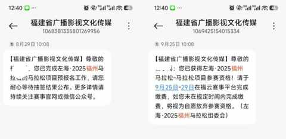
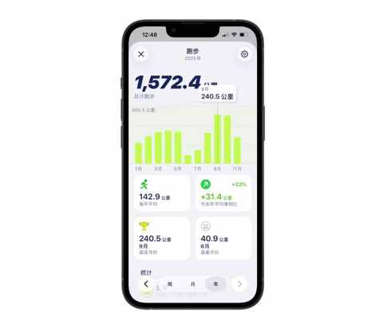
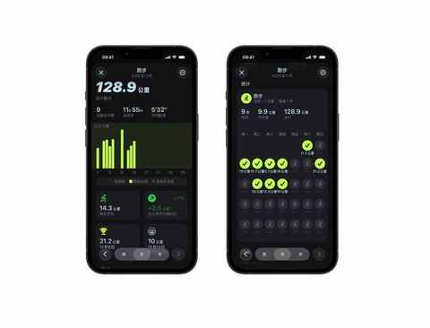
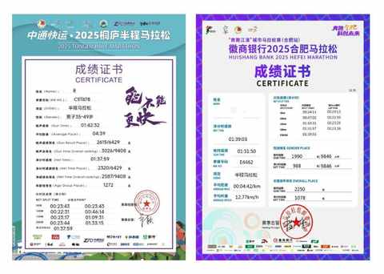

人生的首个全马，倒计时 30 天，我做了这些准备……
一、首次中签全马
在 8 月 29 日抱着试试看的心态报名了福州马拉松的全马项目，当时看到人数规模挺大，预估中签率可能比较高，果然在 9 月 25 日收到中签的短信。

今天是人生中第一个全马倒计时 30 天，在下个月的 12 月 14 号或许能在 11 点半之前完赛。
二、做了这些准备
半马的比赛已经参考过 3 次，均顺利完赛，跑完之后恢复的也越来越快。
即便如此，在没有跑全马之前，心里还是没底，下面的这些准备是最近几个月一直在做的事情。
1️⃣ 堆跑量
从 9 月份开始把跑量提高到 200 以上，10 月份同样也保持在这个跑量。

11 月准备把跑量再提高一点，争取在 280-310km 的范围，也会在月底跑一次 30-35km 看看实际跑下来的情况，尽全力增加全马完赛的可能性。

2️⃣ 买鞋
扔掉两双鞋，然后买了三双鞋。
① 安踏 柏油路霸 2
用来通勤和堆跑量，主要跑 5-15km，挺喜欢薄底和赤足的脚感，虽然缓震效果一般，但能很好的反应真实水平。
② 361 飞燃 3
没有想买顶碳的冲动，看到飞燃系列的口碑不错，在闲鱼买了一双飞燃 3，想用来做全马的比赛用鞋。
③ 鸿星尔克 绝尘 4
上半年买过一双绝尘 2，跑了 700km 后扔掉，因为中底性能明显下降，绝尘 4 脚感偏硬，准备用来跑长距离，跑过几次 15km 之后可以接受这个硬度，还是要比碳板鞋要舒服一些。
3️⃣ 以赛代练
想了解自身水平，参加比赛是最适合不过的方式，由于之前没有 A 级赛事的成绩， 10 月底和 11 月初的 两场半马都是被分在偏后的分区。
好在这两场半马比赛，都达成目标，均跑进 140。

如果按照网络上流行的公式， 去推测全马成绩的话 ：
全马完赛成绩 = 半马成绩 x 2 + 10到30分钟
我的全马完赛成绩可能在： 330-350。
三、 12月14日，赛道见
倒计时30天，所有的堆量、所有的尝试，都将在 42.195公里的 赛道上得以见证！首马的意义，或许并不在成绩本身。
某种意义上，我不是去挑战马拉松，而是去见证那个跑步两年半、跑了3200公里、认真备战的自己。
福州，12月14日，我们赛道见！
近期文章
3000km实测，一个人跑步的真相：在享受自由的同时，也要面对提高的不易
早早开始的双11，就这么波澜不惊的过去了
一个长居省外中年人的合肥印象：记2025的年第4次合肥行
在骆岗公园与2.5万人一起起跑！我的合肥“首马”小事记
中年减肥成功2年后，才发现运动形式真不重要，守住这3点才能不反弹！
我的两个配图利器：两个APP强强联合，实现1+1 > 2的视觉升级
中年初跑者增加跑量两个月后，对如何选跑鞋有了 3个新思考
别慌！和所有Intel版Mac用户共享：3个让我们继续用的理由和2个续命秘籍
老车主看了极氪7X的焕新版之后：情绪稳定！
中年减肥成功2年后，才发现这5个坑当初要是有人点醒我该多好！
中年减肥成功2年后，才发现维持体重靠的不是毅力，而是这5个微习惯